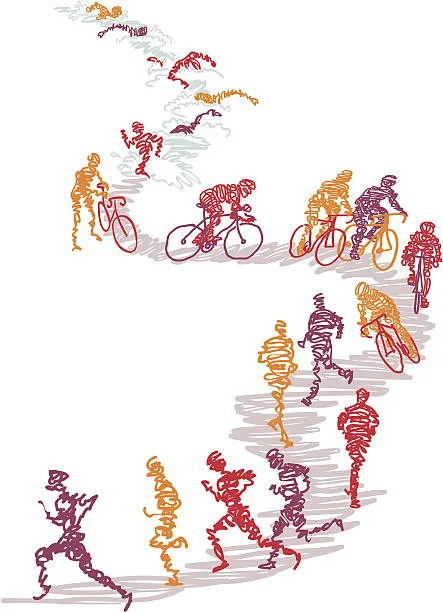

15 de marzo
Desafío Costa Brava
Triatlón Sprint. ¡Supera tus límites en 750 m de natación, 20 km de ciclismo y 5 km de carrera!
 RockTheSport
RockTheSport
Descubre los triatlones y eventos solidarios de esta temporada. Hay retos para todos los niveles, desde los más pequeños hasta los más preparados.
¡Elige el tuyo e inscríbete!

Los eventos más esperados de la temporada
15 de marzo
Triatlón Sprint. ¡Supera tus límites en 750 m de natación, 20 km de ciclismo y 5 km de carrera!
12 de abril
Triatlón Olímpico. Recorrido homologado con avituallamientos cada 5 km.
Incluye cronometraje oficial y categoría por relevos.
7 de junio
Half Ironman. 1,9 km de natación + 90 km de ciclismo + 21,1 km de carrera.
Puntúa para el ranking nacional y da clasificación al Campeonato.
20 de septiembre
Triatlón Infantil. Categorías desde benjamín hasta júnior.
Inscripción gratuita y medalla para todos los participantes.
Haz deporte y ayuda a quien más lo necesita
22 de febrero
Triatlón Solidario. ¡Cada 5 km completados financian una hora de tratamiento!
Objetivo: becas de investigación en cáncer infantil.
19 de abril
Duatlón Benéfico. ¡Tu inscripción equivale a un día de techo para una familia!
Objetivo: construir viviendas de acogida familiar.
14 de junio
Triatlón por relevos. ¡Forma un equipo de 3 y cada relevista apadrina 100 comidas!
Objetivo: bancos de alimentos y comedores sociales.
8 de noviembre
Acuatlón Nocturno. ¡La meta se iluminará con una vela por cada donación recibida!
Objetivo: cierre del circuito solidario y entrega de resultados a las ONG.
20 de diciembre
Caminata Benéfica. ¡Cada 10 km recorridos se entregan raciones de comida a familias necesitadas!
Objetivo: comedores sociales durante las fiestas navideñas.